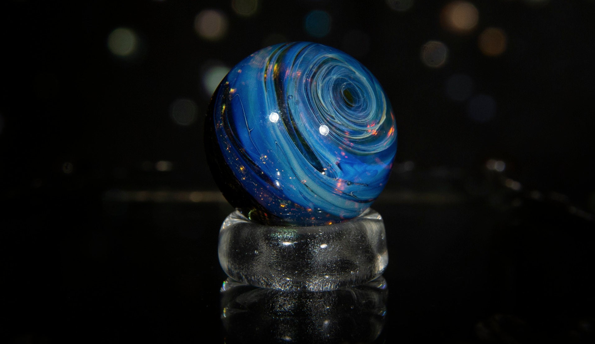
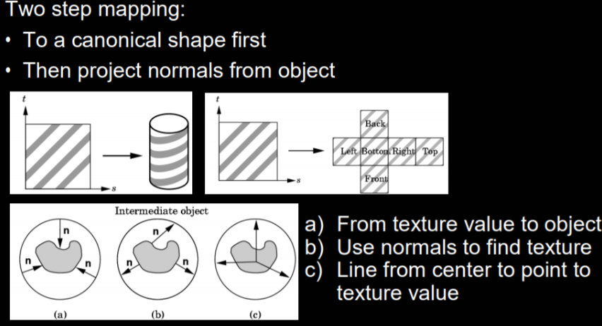
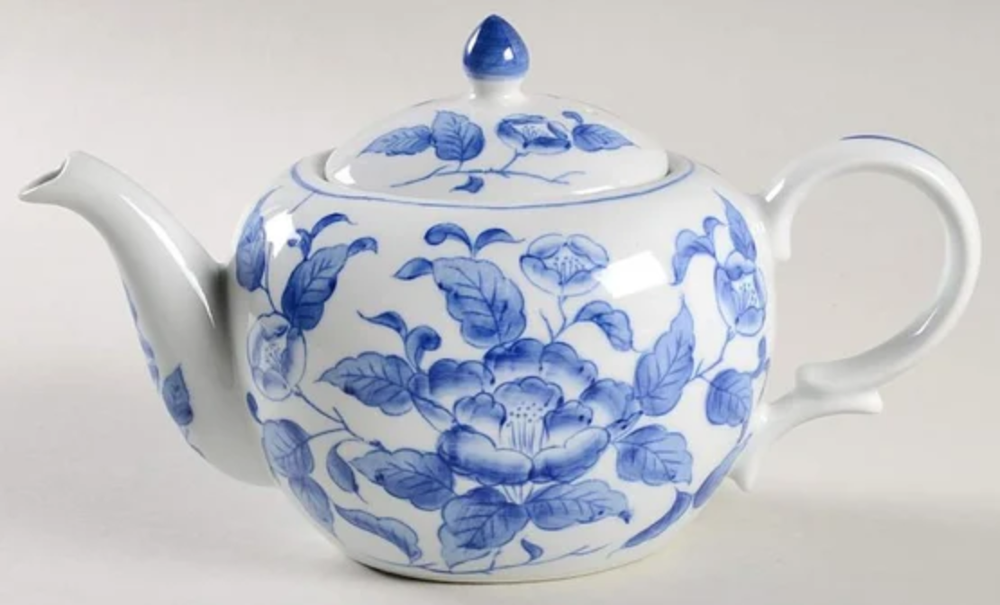
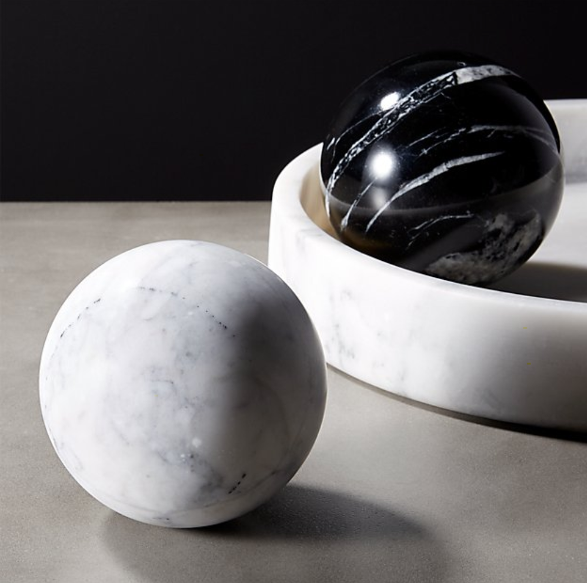

Our project aims to implement 3D texture mapping algorithms based on the assignment 3-1 and 3-2. We’ll implement two mapping methods. One is canonical shape mapping + normals mapping, the other is manually mapping. In the first method, we can try three different strategies in the normal mapping step. With the help of texture, we can render more realistic and complex objects based on ray tracing.
|

|
3D Texture mapping is essential to render realistic images in ray tracing. It is not sufficient to only use material to define the surface of objects that have a complex 3D mesh. In order to define specific colors on different areas of 3D mesh, texture mapping is convenient to do so. For an arbitrary polygon object, there are two most common ways to map texture. The first one is mapping 2D texture to canonical shape (Cylinder, Cube, ect.) first and then projects normals from objects to the canonical-shaped texture[1]. The second method is designing the mapping manually.
One of the possible biggest challenges during mapping is aliasing. We’ve implemented several anti-aliasing algorithms such as mipmap, supersampling in assignment 3. In this project, we’ll explore more antialiasing algorithms in 3D texture mapping and compare the performance of them. Moreover, the canonical shape mapping algorithm would cause distortion in some parts of the texture map. We’ll also explore that to see how we can alleviate this distortion.
In this project, we are going to implement different 3D texture mapping methods , compare pros and cons of them and design a GUI that supports texture changing on a specific object.
|

|
Since we are aiming to implement 3D texture mapping for project 3, the images that will be created by us will be similar to the resulting images of project 3 except that the object will have textures. We will start with basic objects like spheres with different textures like wood. Then we will try to render more complicated objects with textures. For example, a furry rabbit. We will also try the combination of texture mapping and material modeling to create objects made with materials like marble and porcelain that also have reflection.
|

|

|
There will be a video demo that shows objects in a scene can be rendered with user selected texture. We will use the GUI and there will be drop down menus for users to change different materials and patterns of objects. Users are also able to change between different texture mapping method.
The quality of the rendered images is our metric. The quality of the images includes the smoothness of the texture, which means no discontinuity of texture on the surface of objects. Also, there should be no aliasing on the rendered images.
In this project, we are going to learn different approaches to perform texture mapping, since mapping effects are distinctive when applying various mapping functions. There are two mapping steps: 1. wrapping functions to canonical shape including polygonal and cube, 2. Projecting normals from the object such as from texture value to object and using normals to find texture. Therefore, after trials and experiments, we will analyze the best combination for different 3D objects and shapes.
We will try to render images with both materials with textures and reflection for some special material like marble or porcelain surfaces, so that we will figure out what other material could satisfy our expectation.
For the baseline deliverables, we plan to come up with the ultimate texture mapping functions based on the objects provided in project 3 and render them using our implemented texture map. Comparison metrics of different approaches will be our analysis to estimate the best combination of mapping functions.
For the aspirational plan, we are going to generate images with both textures and microcraft effect for some special material, if the baseline goal has been achieved.
[1] http://graphics.cs.cmu.edu/nsp/course/15-462/Spring04/slides/09-texture.pdf